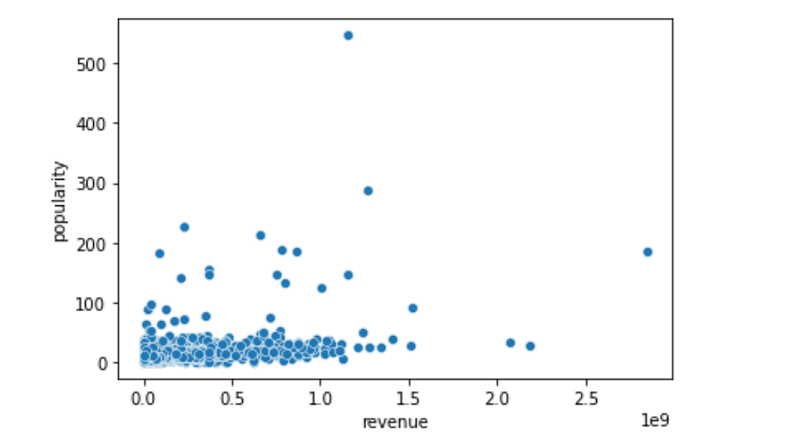

Main Page
Plots
Budget
Popularity
Predictability Matrix
Data
Popularity vs. Revenue

The scatter plot shown displays data points that correspond to popularity and revenue. The hypothesis was that the more popular a movie would be, the higher the box office revenue. It appears that the correlation is not as strong as it could be.